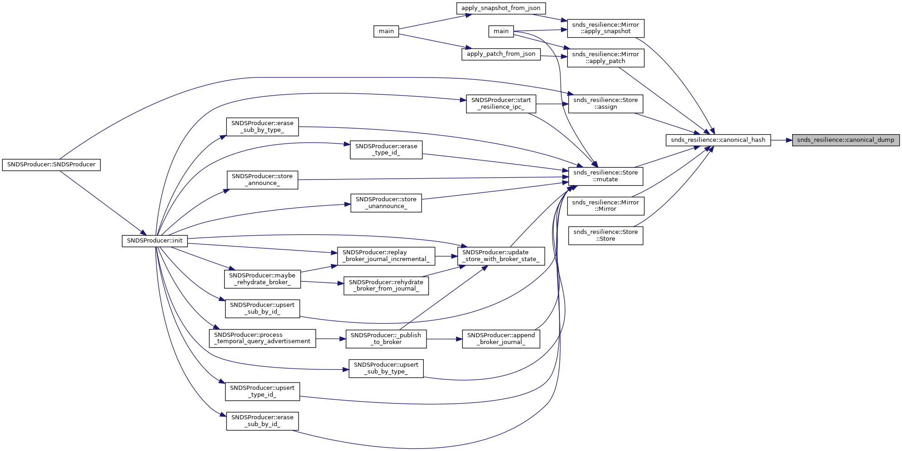
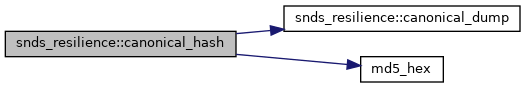
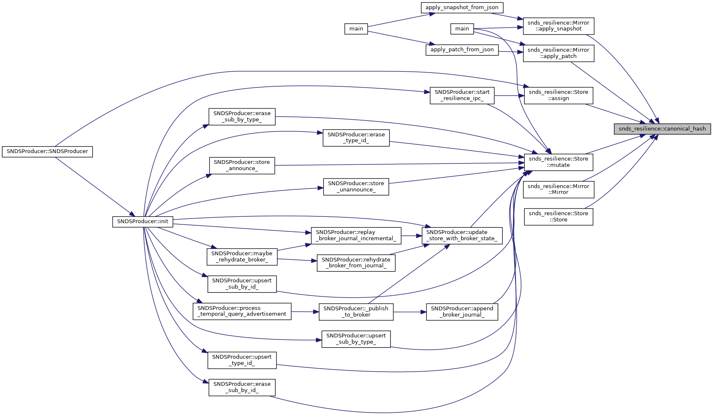

|
SeEDS
|
Lightweight versioned JSON store + mirror with canonical hashing and JSON Patch deltas. More...
Classes | |
| struct | Meta |
| Minimal metadata describing a state head. More... | |
| struct | Snapshot |
| Full snapshot of the state (for re-sync or cold start). More... | |
| struct | Patch |
| Delta between two versions of the state. More... | |
| class | Store |
| Versioned, canonical JSON store with bounded history and patch generation. More... | |
| class | Mirror |
| Follower-side mirror capable of applying snapshots and patches. More... | |
Functions | |
| std::string | canonical_dump (const nlohmann::json &j) |
| Produce a deterministic, canonical JSON string. More... | |
| std::string | canonical_hash (const nlohmann::json &j) |
| Compute a canonical content hash for a JSON object. More... | |
Lightweight versioned JSON store + mirror with canonical hashing and JSON Patch deltas.
| std::string snds_resilience::canonical_dump | ( | const nlohmann::json & | j | ) |
Produce a deterministic, canonical JSON string.
Uses nlohmann::ordered_json to ensure a stable key order and emits a compact dump so the same logical object always serializes identically.
| j | Source JSON object. |

| std::string snds_resilience::canonical_hash | ( | const nlohmann::json & | j | ) |
Compute a canonical content hash for a JSON object.
Hash is computed over canonical_dump(j) via MD5 (for fast, stable fingerprints—not for cryptographic security).
| j | Source JSON object. |

